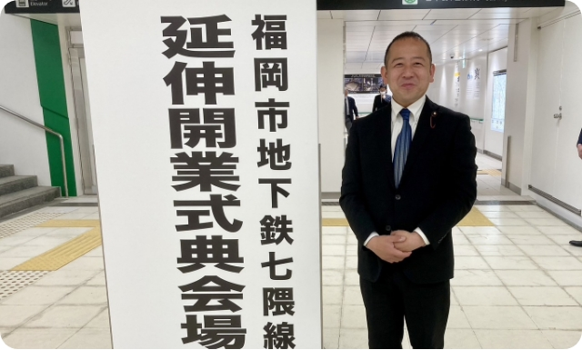

2023.04.03
福岡市議会議員
新しい時代を支え切り拓いていくのは、子どもたちです。
子どもたちには、勇気や粘り強さ、 人に対する思いやりを持って、
これからの時代を切り拓いてほしい。その思いを胸に、
常に市民の目線に立ち、4年間全力で
福岡市の山積する課題に立ち向かってまいりました。
新たな時代をつくる子どもたちのために、
強い使命感と高い緊張感をもち、 人口減少、少子高齢化をはじめ
子育て・教育・地域・農林水産業など様々な課題に
取り組んでいかなければなりません。
子どもや若者が夢や希望を持ちお年寄りや
障がいの有無にかかわらず安心して暮らしていけるように、
切れ目のない支援が必要であります。
感謝の気持ちを忘れずに生まれ育った
福岡市・西区で、地域のためにお役に立てるように しっかりと汗を流し、
この時代を生きるすべての人と前を向いて、 次の世代のために、
今後とも一意専心で取り組む所存であります。
皆様のご指導ご支援を賜りますよう心よりお願い申し上げます。
福岡市議会議員 淀川幸二郎

・昭和５６年５月１７日、福岡市西区生まれ
・ときわ幼稚園 卒園
・内浜小学校 卒業
・姪浜中学校 卒業
・西福岡高等学校（現：福岡講倫館高等学校） 卒業
・株式会社 大建 勤務
・元国務大臣 太田 誠一 秘書
・衆議院議員 古賀 篤 秘書
・福岡県議会議員 浦 伊三夫 秘書
・総務財政委員会
（市長室/総務企画局/財政局/市民局/会計室等）
・議会運営委員会 委員
・少子高齢化対策特別委員会 委員
・九州大学移転・跡地対策協議会 委員
・福岡市都市計画審議会 委員
・福岡市西消防団姪浜分団 団員
・保護司
・福岡西陵高等学校ＰＴＡ 会長
・姪浜中学校ＰＴＡ 副会長
・姪北小学校ＰＴＡ 顧問
・姪浜中央商店会 会員
・福岡アストロズ 顧問
・西南ボーイズ 相談役
・福岡市医師連盟 推薦議員
・福岡市歯科医師連盟 推薦議員
・福岡県宅地建物取引業協会 福岡西支部 推薦議員
・福岡市私立幼稚園連盟 振興議員
・福岡市森林･林業･林産業活性化促進議員連盟 議員
・西区小学校ＰＴＡ連合会 会長
・内浜保育園保護者会 会長
・姪北小学校ＰＴＡ会長
他の活動内容を見る
〒819-0002
福岡市西区姪の浜4丁目20-12-202
TEL：092-407-1197
FAX：092-407-1198
E-mail：info@k-yodo.net